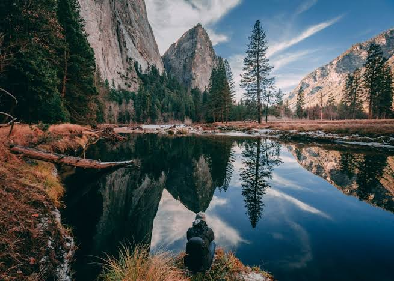
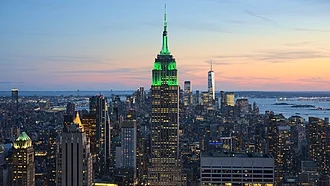

I have a background in photography. Visual communication is my strength; words don’t always come easily to me. While I don’t identify myself as a writer I’ve always been a traveler. From a young age, I was given the opportunity to travel. I spent countless hours on family road trips & vacations to what seemed, at the time, distant places. I got my first taste of the tropics in Hawaii and learned about ancient civilizations in Mexico. These experiences ingrained themselves on my psyche. But, somewhere along the way, my life became focused on typical ‘adult’ worries we all know: careers, mortgages and bills leaving no time for travel. I’m not affluent (unfortunately). I haven’t yet won the lottery. I have a profession that takes me away to work in the most remote reaches of northern Canada. I manage construction projects for weeks at time, without ever leaving the camp. These days and weeks in isolation are difficult & draining, typically broken up only by a few short days off at home; or worse—lay offs. It was a longer break from work, years ago, that rekindled my passion for travel. I’d been laid off from my job, bought a motorcycle and on a whim ridden from Canada to Panama and back. A wayward day dealing with flat tires, ornery customs agents and a foreign language all while managing to end the day with a smile cemented the fact that travel would always been an integral part of my life. During that first extended trip I learned a lot about myself. I’ve always kept journals of my travel experiences, documenting the highs and lows throughout the trip. I think It’s helped exposed my priorities and passions in life. While procrastinating doing some badly needed yard work one day I was reading through one of these journals. I was literally flipping the pages of my experiences. As I read my own words I was instantly transported back to the sights and sounds of my trip through Central America. A nagging feeling persisted for days on end. I couldn’t get those images out of my head. I had a case of itchy feet. My wanderlust was alive and well! The compulsion was so strong that I made a promise to myself then and there: make travel a priority in my life once again. I’m not a writer, so why blog? It’s a commitment to myself that holds me accountable. It’s the home for my adventure stories. The ups, the downs and everything between. I’ll share photos, video and stories from the places I visit and the cultures I explore. I’ll post tip’s & tricks to help you travel better and/or cheaper and with luck inspire you to break out your passport and travel more often.

Paris[b] is the capital and largest city of France, with an estimated city population of 2.04 million in an area of 105.4 km2 (40.7 sq mi), as of January 2026,[4] and a metropolitan population of 13.3 million (2023). Located on the Seine in the centre of the Île-de-France region, it is the largest metropolitan area and fourth-most populous city in the European Union (EU). Paris is nicknamed the "City of Light" mainly due to its leading role in the Age of Enlightenment.

Bali (English: /ˈbɑːli/ ⓘ; Indonesian: ['bali]; Balinese: ᬩᬮᬶ) is an Indonesian island and province and the westernmost of the Lesser Sunda Islands. East of Java and west of Lombok, the province includes the island of Bali and a few smaller offshore islands, notably Nusa Penida, Nusa Lembongan, and Nusa Ceningan to the southeast. The provincial capital, Denpasar,[13] is the most populous city in the Lesser Sunda Islands and the second-largest, after Makassar, in Eastern Indonesia. The Denpasar metropolitan area is the extended metropolitan area around Denpasar. The upland town of Ubud in Greater Denpasar is considered as Bali's cultural centre. The province is Indonesia's main tourist destination, with a significant rise in tourism since the 1980s, and has become the country's area of overtourism.[14] Tourism-related business makes up 80% of the Bali economy.[15]
New York, often called New York City (NYC),[b] is the most populous city in the United States. It is located at the southern tip of New York State on New York Harbor, one of the world's largest natural harbors. The city comprises five boroughs—Manhattan, Brooklyn, Queens, the Bronx, and Staten Island—each being coextensive with its respective county. It is the geographical and demographic center of both the Northeast megalopolis and the New York metropolitan area, the largest metropolitan area in the United States by both population and urban area. New York is a global center of technology,[9] finance[10][11] and commerce, culture, entertainment and media, academics and scientific output,[12] the arts and fashion—and as home to the headquarters of the United Nations, international diplomacy.[c] New York City is known for its fast pace and continuous urban energy.[18][19][20]
